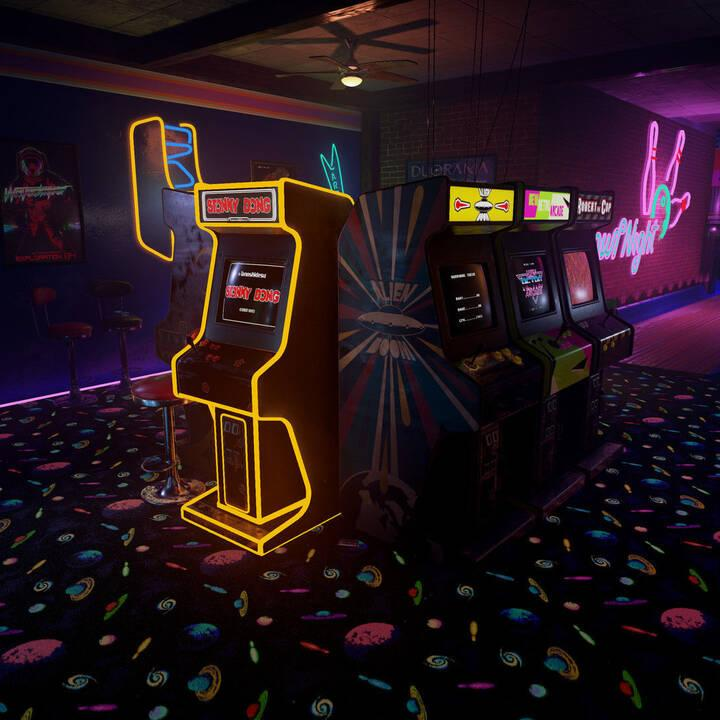

TIC-TAC-TOE
ROCK PAPER SCISSORS
SLOT MACHINE
MEMORY GAME

🔰 Welcome to Arcade games.
Please select a button above the page and read the instructions, if you are interested in the game, we suggest you to click the button below the page to play!
GO TO THE GAME